| 続・心理統計学の基礎 |
| 続・心理統計学の基礎 |
標準化された平均値差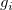の近似的分散は、式 (2.20) に示したように
| 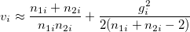 | (5.133) |
で1、これを用いて
 |
(5.134) |
で研究 の効果量のCIを求められる2。
の効果量のCIを求められる2。
平均値差の近似的分散の逆数を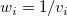とし、母集団効果量 を
を
| 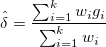 | (5.135) |
によって推定する。
このとき、
| 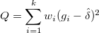 | (5.136) |
が、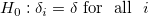の下で、自由度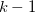のカイ2乗分布に従うことを利用して、等質性の検定を行う。
また、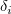の分散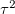は、モーメント法により
| 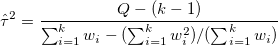 | (5.137) |
と推定できる。
ランダム効果モデルによって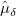が推定された場合、
 |
(5.138) |
を効果量の“95% plausible value interval" と呼ぶ3。 つまり、の95%はこの範囲に含まれるだろうということ。
メモ |
テキストでは、固定効果モデルによる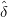を利用しての含まれる範囲を例示しているが、これは混乱を招く。 |
Footnotes
の不偏推定量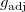を提示し、その近似的分散が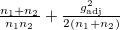で与えられることを示している。| 続・心理統計学の基礎 |